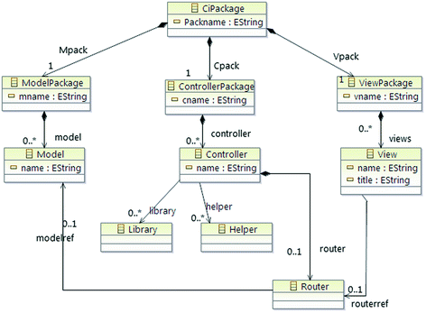
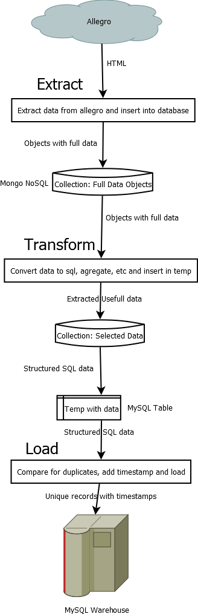
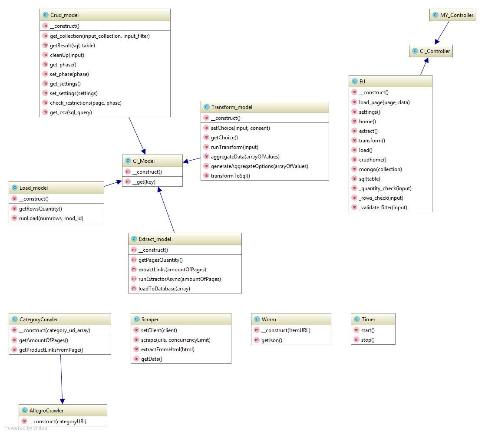

Model-View-Controller
Application is developed using Model-View-Controller programming pattern.
Application makes use of one central controller, 4 models and a bucket of views.
Views render and present data to user. Models retrieve and process data from data-sources such as remote Allegro pages and databases. Controller passes data between views, models and also handles URL routing for the web pages.
The following graphic illustrates how data flows through the MVC system.

Structure, which was presented above is supported by following system, implemented in the core of the CodeIgniter framework.

Application Flow
Detailed application flow chart is as follows:

How does it work?
Extract
- Extract scraps first page of the provided category and presents user amount of pages in this category.
- User specifies amount of pages which he wants to extract and hits the
EXTRACTbutton. - Application loops through through category pages and collects links to products from each page. Each page contains about 64 links.
- Object of the class
Symfony\Domcrawleris created for each product page, which emulates web-browser and opens the page. - Crawlers are sent in a multi-threaded manner, in a queue 10 at a time.
- After getting the page Crawler cuts out part of the javascript in this page which contains json object of a product which is described at this page.
- Object is processed using regex and some logic and is validates as a proper json-object.
- Json-object is added to a bulk which, when is full, will be inserted to a temporal
extractedcollection in MongoDB database as a multidimensional nested object with raw data. - Process result: MongoDB Collection
extractedwith raw data.
Transform
- User specifies list of properties which he wills to aggregate from raw data received after Extract process and hits the
Transformbutton. - Temporal collection with aggregated data from previous runs is cleared.
- Aggregation pipeline is formed and
extractedcollection is passed through it and the result is dumped intoaggregatedcollection as a simple key->value objects. - Data from
aggregatedcollection is taken and value-by-value is transformed to an appropriate data type. Columns which were not chosen during user specification are set toNULL. - Transformed data is upserted into MySQL temporal database
temp_products. - Process result: MongoDB Collection
aggregatedwith one-dimensional key->value data and MySQL tabletemp_productswith fully transformed data.
Load
- Application queries
temp_productstable and presents the user how many rows are going to be inserted into database. - User specifies amount of rows which he want to insert and hits the
LOADbutton. - Application selects all rows from
temp_productstable and appends to each one a timestamp which consists from 4 rows:create_date,create_id,modify_date,modify_idwhich contain information about identity of creator, modifier and creation/modification timestamp. - Data is upserted into target table
productswhich represents data warehouse. - Process result: MySQL table
products.
Class UML

Core of the application consists of 4 Models which are children of CI_Model framework class.
One controller class Etl is used to process data between models and various views.
Additionally, 4 assistant classes are used in various models.